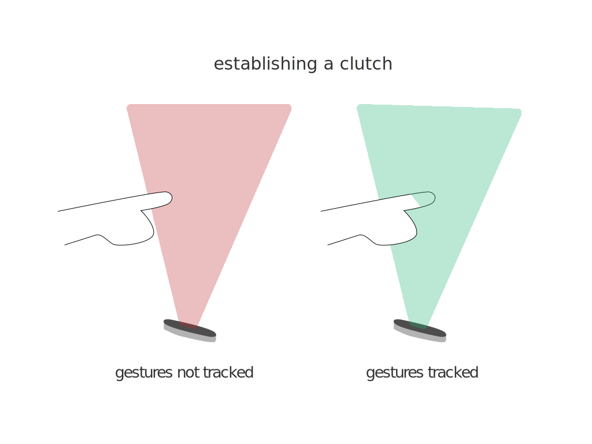

interactive wall
prototype for gesture based interactive installation

Interactive Wall, a 10 week team project implementing a gesture based interactive installation.
The Interactive Wall was a interdisciplinary team project I led. It was designed for students, faculty, and visitors of the Shineman Science Center at SUNY Oswego. The installation gave passersby the opportunity to step away from the present and explore small experiences which tried to transport them to a new mindset. These included creativity, inspiration, excitement, and relaxation. The user interacts with each experience through the use of a Leap Motion Sensor, allowing them to use their hands without direct touch. This novel interaction was a unique design challenge but the experience created was exciting for many first time users.
Create an application that uses sensors as a form of user input.
Interface Graphics created by Wei Wang.
team members
4
Undergraduate Software Engineers
Brandon Caruso
Vinicius Jacques
Alexander Meritt
Chris Prestia
3
Graduate HCI Students
Wei Wang
Andrew Houck
Samantha Bielli
tools
Java FX
JBox2D
Leap Motion Sensor
Adobe Illustrator
research

The team set out to identify pieces of artwork, music, and quotes that users of this space might find relaxing or engaging. Though highly subjective, the survey created by the HCI graduate students on the team had 63 respondence and some patterns emerged. These patterns were used to generate the four experiences for the installation; Blocks (creativity), Fireworks (excitement), Pond (relaxation), Gallery (inspiration).
gestures
In-air gesture recognition was a novel and interesting mode of interaction. These gesture based interactions come with unique challenges that the team had to uncover. Using a Leap Motion Sensor, the installation was able to track the users hands and fingers to manipulate and interact with the installation. The team set out to establish a gesture guide to create gestures that were quick to learn and consistent. Select gestures were reserved for cross system use.

challenges of gesture interfaces
The team had to overcome many challenges, two of the main challenges were dealing with the common problem of false recognition or what some call the live mic problem. In terms of selection, the team decided to use a time-driven approach. When the hand hovered over a "clickable" item a count down would begin before selection was registered. The user would see the hand indicator fill with color and also hear sound feedback. In one of the experiences a clutch was established to help combat the live mic problem. This clutch is a virtual plane that when crossed would start recognition. This has it's own limitations. User's height and distance from the sensor made the location of the plane difficult to establish.
interface
initial
The initial concept was a collection of wireframes establishing the main selection flow. These were later refined into more finalized wireframes.
Created by Brandon Caruso.

wireframes
Once we had all the experiences laid out and organized, wireframes were create for all the screens in the installation.
Diagrammed by Wei Wang.
high fidelity
The wireframes were used to generate potential high fidelity mockups. Different visual styles and languages were established based on the survey data. The final selection was based on the team's visual preference and feasibility.
Created by Wei Wang.

prototype
explore
Hovering hands over the sensor begins the interaction with the wall. Placing the hand over a tile selects the experience.
Implemented by Brandon Caruso.
blocks
Pointing at blocks picks them up. Opening the hand release the block to build towers.
Implemented by Brandon Caruso.
fireworks
Poking the sky sets of colorful fireworks over the Oswego lighthouse and the water of Lake Ontario.
Implemented by Alexander Meritt and Samantha Bielli.
Gesture Recognition by Brandon Caruso.
gallery
Hovering the hand over the arrows, navigates through the collection of art and quotes. More information about a piece of artwork can be found by hovering over it.
Implemented by Vinicius Jacques and Chris Prestia.
pond
Running fingers through the air translates to a tranquil experience as the fingers invisibly run through the water and leave behind ripples.
Implemented by Vinicius Jacques.